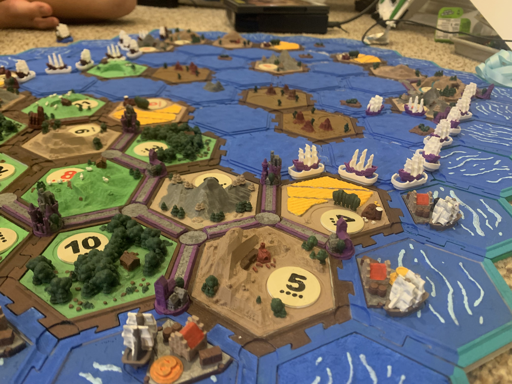
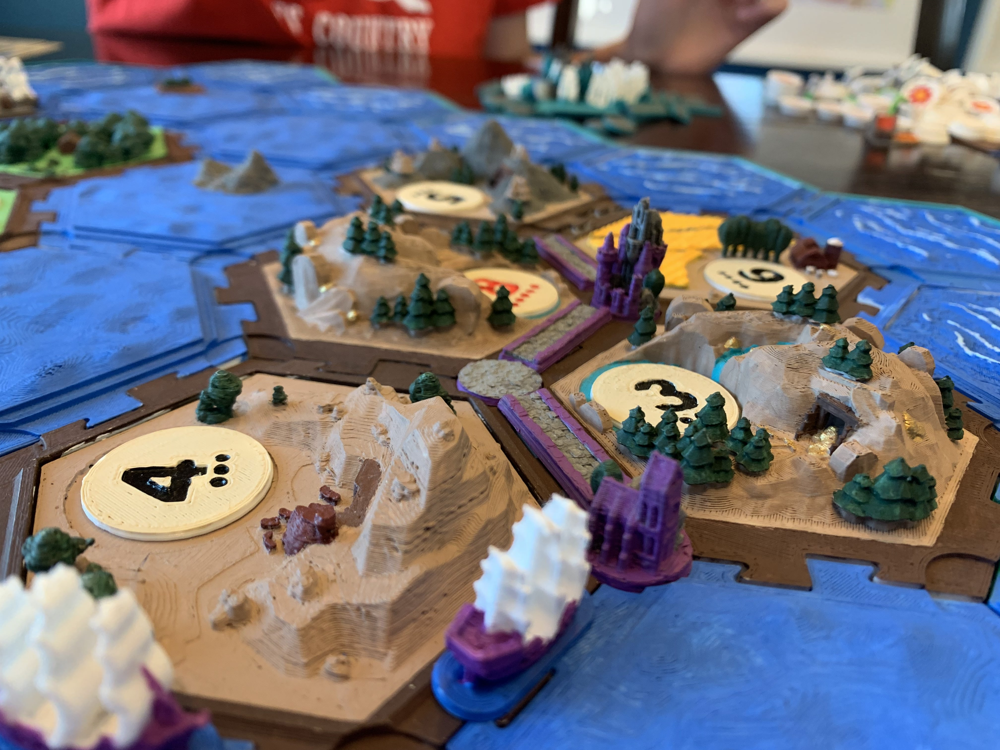
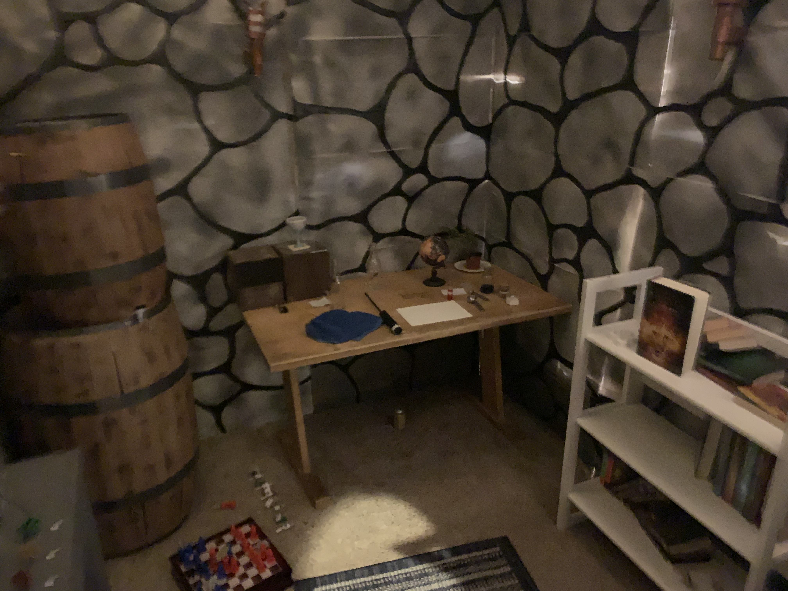
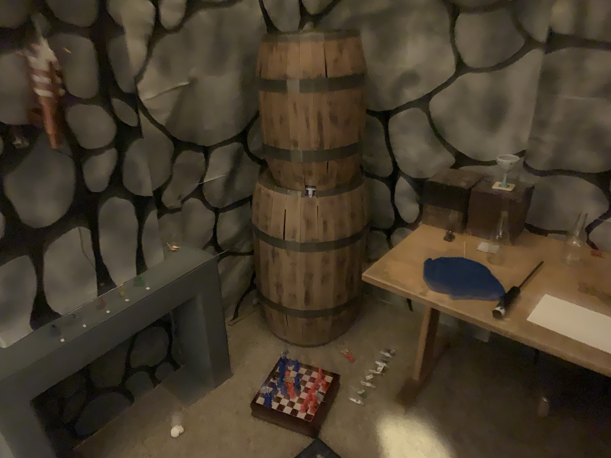

<!DOCTYPE html>
<html>
    
</html><!DOCTYPE html>
<html>
    <head>
        <title>Projects - Games</title>
        <link rel="stylesheet" href="styles.css">
        <meta charset="utf-8">
        <meta name="viewport" content="width=device-width, initial-scale=1">
    </head>
    <body>
        <header id="header">
            <h1>Project Portfolio</h1>
        </header>
        <nav>
            <a href="index.html" class="navItem">Home</a>
            <a href="ecosystems.html" class="navItem">Ecosystems</a>
            <a href="costumes.html" class="navItem">Costumes</a>
            <a href="vehicles.html" class="navItem">Vehicles</a>
            <a href="games.html" class="navItem currentPageNav">Games</a>
            <a href="otherProjects.html" class="navItem">Other Projects</a>
        </nav>
        <section id="games-intro">
            <h2>Games</h2>
            <p>I've always enjoyed a good game, especially board and card games. Some of my favorite projects that I've ever done have been creating games for myself and others to enjoy.</p>
        </section>
        <div class="spacer separator"></div>
        <section id="catan">
            <h3>Catan</h3>
            <figure>
                
                <figcaption>Catan Seafarers expansion game</figcaption>
            </figure>
            <p>I loved playing Catan with my sister during COVID, and my dad suggested seeing if there was a 3D version I could make. So I looked and found <a href="https://www.thingiverse.com/thing:3072272">this one</a> on Thingiverse.</p>
            <div class="spacer"></div>
            <p>The design was made for multi-color printers, but since my 3D printer can only do one color, I spent many hours meticulously painting each and every piece. Overall, it took me multiple years to completely finish, but I'm very happy with how it turned out, and I've enjoyed many games in 3D with my little brother.</p>
            <div class="spacer"></div>
            <figure>
                <div class="flex-container">
                    
                    
                </div>
                <figcaption>Catan: Seafarers expansion</figcaption>
            </figure>
        </section>
        <div class="spacer separator"></div>
        <section id="escape-rooms">
            <h3>Escape Rooms</h3>
            <figure>
                
                <figcaption>Medieval-themed escape room</figcaption>
            </figure>
            <p>I first became interested in making escape rooms when I found a book called "The Do-It-Yourself Escape Room Book" at the library in the summer of 2022. I read the whole book and immediately decided to make an escape room game for my sister's birthday. She loved pirates, so I figured that would be a perfect theme. I spent about a week and a half designing a puzzle flow, making puzzles, and preparing special effects, all pirate-themed. On her birthday when I set it up and had her play it, it was a huge success.</p>
            
            <p>In August of 2023, I had graduated high school and was preparing to start college, and I had time on my hands. So I decided to make another escape room, this time medieval themed. I wanted this one to have "magic" elements, so I used ESP8266 microcontrollers and a Raspberry Pi to create IoT props and decorations.</p>
            <div class="spacer"></div>
            <p>Some of the highlights were a moving wall behind the fireplace, a magic mirror, and a color-changing wall torch. I created the walls and fireplace out of cardboard boxes. The cardboard barrels were leftover props from the pirate room and worked great here. There were also various 3D printed parts, as well as decorations and props that I found around the house. This was a super fun project and in the end I think the effects turned out pretty well!</p>
        </section>
        <div class="spacer"></div>
        <a href="#header" class="back-to-top">Back to top</a>
        <footer>
            <p>Jacob T. Rollins</p>
            <p>rollinscreate29@gmail.com</p>
            <p>Cave Creek, AZ</p>
        </footer>
    </body>
</html>